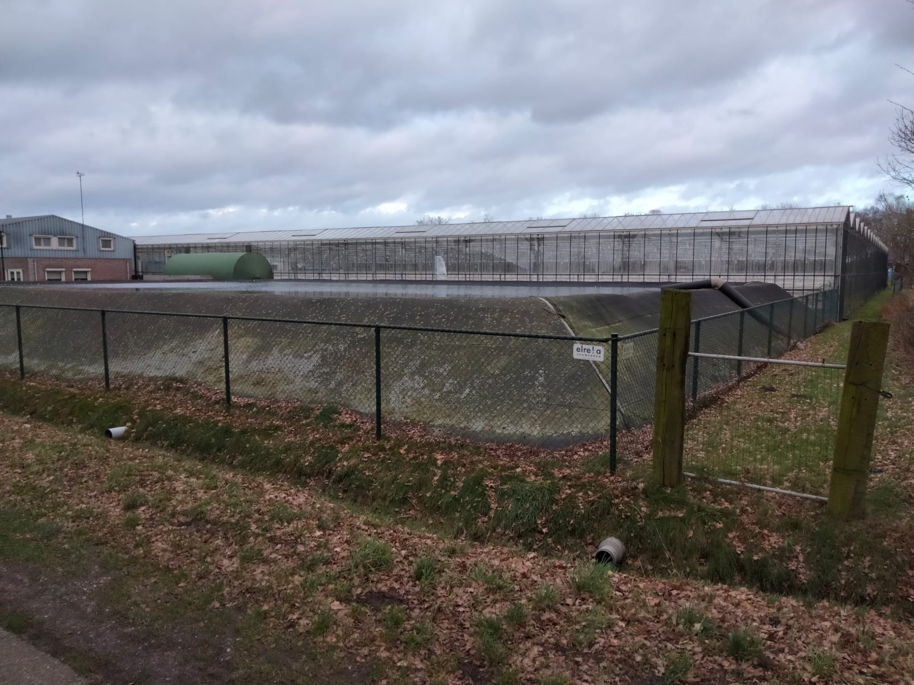

Maak kennis met De Bunders
Een vertrouwde plek.
Een eigen verhaal.
Van tuinbouwkas naar moderne caravanstalling. Ontdek hoe onze locatie in Venhorst door de jaren heen is veranderd.

Tuinbouwsector
De tijd van de tuinbouwkas
Waar tegenwoordig caravans, campers en andere voertuigen worden gestald, groeiden vroeger dagelijks verse gewassen.
De kas werd jarenlang gebruikt voor de teelt van komkommers en tomaten. Later werd de focus verlegd naar de aardbeienteelt. Dankzij de grote oppervlakte vormde deze kas jarenlang een belangrijke plek voor de tuinbouw.

Verbouwing
Van kas naar stallingsruimte
Na de tuinbouwperiode ontstond het idee om de locatie een nieuwe bestemming te geven.
Het glas en de installaties werden verwijderd terwijl de sterke staalconstructie behouden bleef. Vervolgens werd het gebouw volledig dichtgemaakt met plaatmateriaal waardoor een ruime, droge en veilige opslagruimte ontstond.

Vandaag
Moderne caravanstalling
Inmiddels is De Bunders uitgegroeid tot een professionele caravanstalling met plaats voor meer dan 150 voertuigen.
De stalling wordt omringd door de rustige natuur van Venhorst en biedt een veilige plek voor caravans, campers, boten, auto's, vouwwagens en aanhangers.
Met camerabewaking, ruime openingstijden en een centrale ligging in Noord-Brabant vormt De Bunders vandaag de dag een betrouwbare keuze voor vele klanten uit de regio.
Welkom bij De Bunders
Een fijne plek voor uw voertuig.
Vraag een stallingsplaats aan. Wij informeren u over de actuele beschikbaarheid en de mogelijkheden voor uw voertuig.